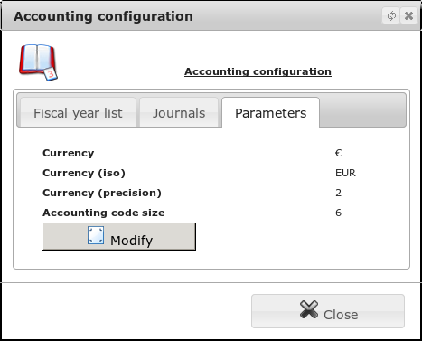
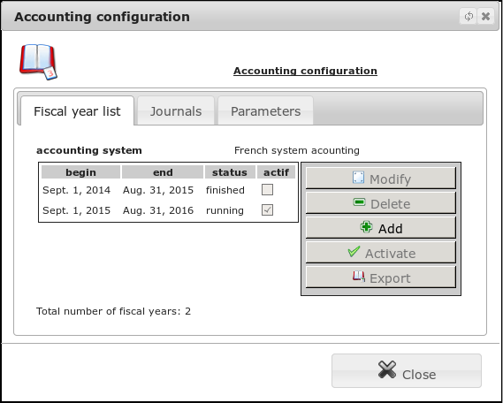
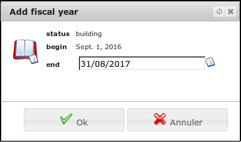
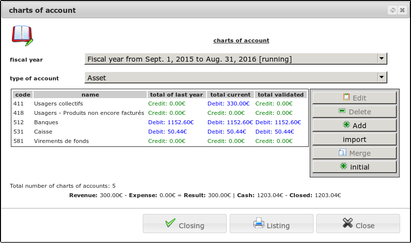
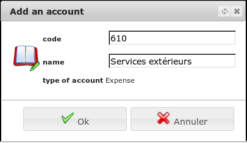
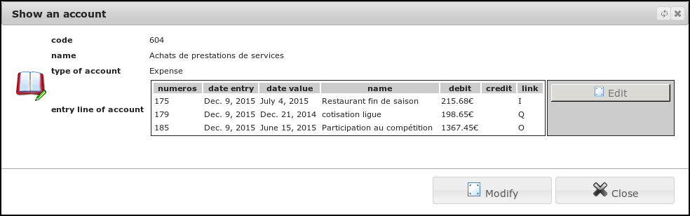

Fiscal year¶
Settings¶

Initially, you can define the type of accounting system you want to use (eg French General Accounting Plan).
Warning: once defined, this system can not be changed.
You can also change the currency of your household communications accounting.
Creating a financial fiscal year¶
To create an accounting exercise, go to the menu Management/Modules (conf.)/Accouting configuration.

From there, click Add to show the form that allows you to learn the limits of the exercise

Indicate start date (it must be the day after the date Closing of the previous year) and the end date (maximum 2 years after the beginning of the year) for the period and click on the button OK.
Your new exercise will be available in the list of exercises. To continue building, you will have the select from the list and click the Enable button to to work on by default.
Now close the list of exercises to go to accounting and to create the accounts for the year and only affect the retained earnings before starting éà enter scriptures.
To do this, you will make in the menu Financial/Bookkeeping/charts of account

Here, first create the basic accounts of your exercise.
If you already have a previous year, you can import the account code list.
Once this is done, several choices are presented to you:
- This is your first accounting period
You have just created your structure, you do not have a retained earnings, so now click on the start button, you will have completed the creation of your exercise.
- It’s not your first exercise but you do not use this software before
We’ll have to manually enter your retained earnings. To do this, exit the accounts of the fiscal year, enter the list of entries and manually enter a complete writing, coherent and balanced for your retained earnings. Once done, return to your accounts start to click.
- It’s not your first year and you were already using this software
Use the “retained earnings” “button to import the results of the previous year. As it is not possible to start an exercise with a result (whether the beneficiary or deficit). You need before starting your exercise, ventilate the money to an account of capital (capital, reserves, ..). The decision of this assignment is made by the board under the control of your auditor. For this, you can create a specific writing (newspaper ‘retained earnings’) or use the questionnaire gold from the beginning of the year. To begin the exercise, click on the button to close this phase of creation.
Creating, editing and publishing accounts in the plan¶
Let us in the menu Financial/Bookkeeping/charts of account.
At any time during a year you may get to add a new account in your plan.

Please refer to the legal codes defined by the regulations of your country to define correctly the first 3 digits. For associations dependent on the French right, you will find information on the government website of the French Finance (http://www.minefe.gouv.fr/themes/entreprises/compta_entreprises/index.htm). The last 3 digits of the account you are following your own needs. Change the name for easy identification of your account.
If you are wrong, you can change the account and its designation. If entries were entered with this account, they will be automatically migrated.
For cons, the new account must remain in the same accounting class. You can view a specific account. You can then view all lines of writing associated with this account, as well as account value at the beginning (retained earnings) and current value.

It is also possible for you to remove an account from the Plan if no operations are carried out.
Year-end closing¶
At the end of the period, you must close your exercise. This operation, ultimately, is realized under the control of your auditor. In the menu Financial/Bookkeeping/charts of account Click the “Closing” button.
Warning: All entries must be validated before starting this procedure.
The validation phase will carry out a process of create a series of year-end entries summarizing the results and third debts (customer invoices transmitted or suppliers but not yet settled).